Smooth Laplacian Modifier¶
Modifier Smooth Laplacian cho phép bạn giảm nhiễu trên bề mặt mesh với những thay đổi tối thiểu cho hình dạng của nó.
Nó cũng có thể làm nổi bật hình dạng bằng Factor âm.
Smooth Laplacian hữu ích cho các object được tái dựng từ thế giới thực và chứa nhiễu không mong muốn. Nó loại bỏ nhiễu mà vẫn giữ được hình học mong muốn cũng như hình dạng của model gốc.
Modifier này dựa trên toán tử Laplace Beltrami theo dòng độ cong trong một phương trình khuếch tán.
Gợi ý
Các mesh có số lượng vertex lớn, hơn mười nghìn (10.000), có thể mất vài phút để xử lý. Bạn có thể dùng những phần nhỏ của mesh để thử nghiệm trước khi chạy modifier trên toàn bộ model.
Tùy chọn¶

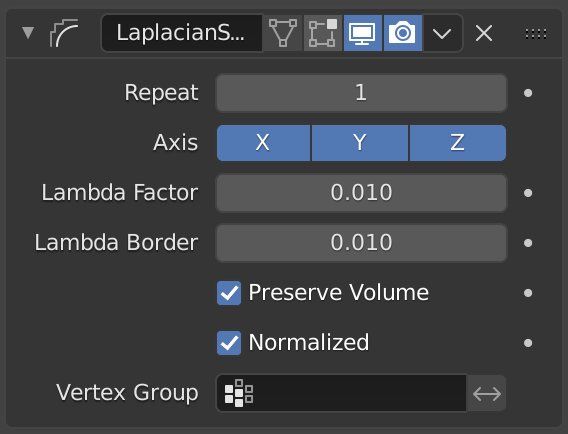
Modifier Smooth Laplacian.¶
- Repeat
Số lần lặp cho phép bạn chạy thao tác làm mượt nhiều lần. Mỗi lần lặp làm dòng độ cong của mesh được tính toán lại, và kết quả là nó loại bỏ thêm nhiễu sau mỗi vòng lặp mới khi dùng Factor nhỏ < 1.0.
Khi bằng 0, không có sự làm mượt nào được thực hiện.
Ghi chú
Số lần lặp càng nhiều thì thời gian tính toán càng dài. Vì vậy hãy thận trọng khi làm vậy trên những mesh có số lượng vertex lớn.
Với factor 2.0.¶ 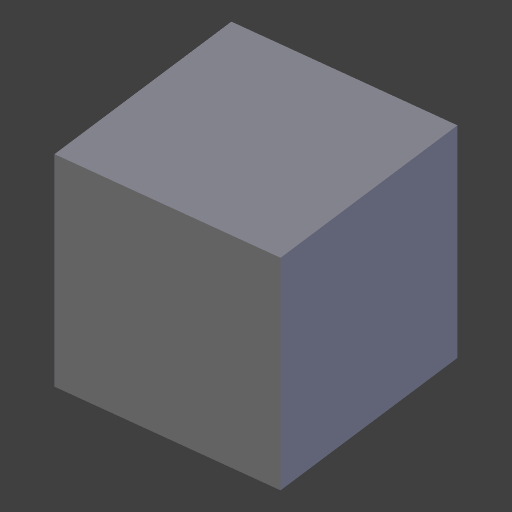
Repeat: 0.¶
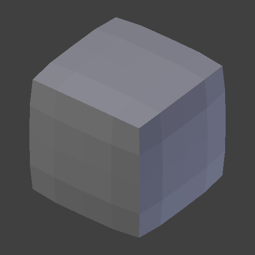
Repeat: 1.¶
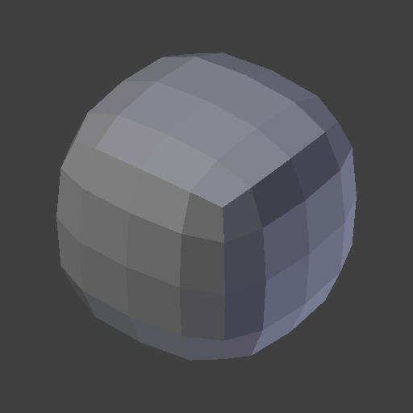
Repeat: 5.¶
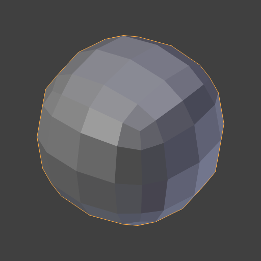
Repeat: 10.¶
- Axis
Các nút gạt để bật/tắt việc làm biến dạng vertex theo hướng trục X, Y và/hoặc Z.
X, Y, Z: Không chọn.¶
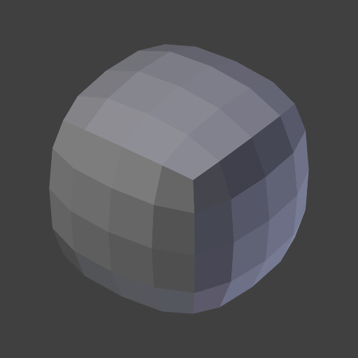
X, Y, Z: Được chọn.¶
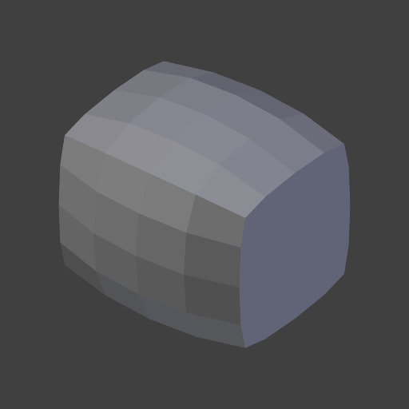
X, Z: Được chọn.¶
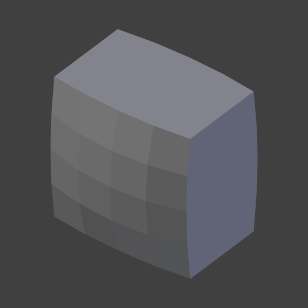
X: Được chọn.¶
X, Y, Z: Không chọn.¶
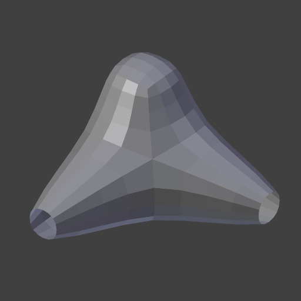
X, Y, Z: Được chọn.¶
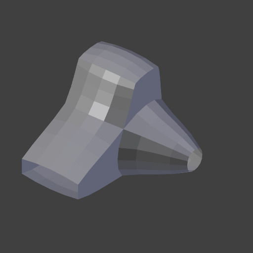
X, Z: Được chọn.¶
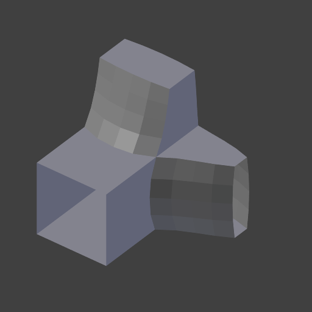
X: Được chọn.¶
- Lambda Factor
Điều khiển lượng dịch chuyển của từng vertex dọc theo dòng độ cong.
Dùng Factor nhỏ, bạn có thể loại bỏ nhiễu khỏi hình dạng mà không ảnh hưởng đến hình học mong muốn.
Dùng Factor lớn, bạn nhận được phiên bản đã làm mượt của hình dạng với cái giá là mất các chi tiết hình học tinh tế.
Dùng Factor âm, bạn có thể làm nổi bật hình dạng, vẫn giữ được hình học mong muốn.
Khi Factor âm, nhiều vòng lặp có thể khuếch đại nhiễu.
Factor: 0.0.¶
Factor: 0.5.¶
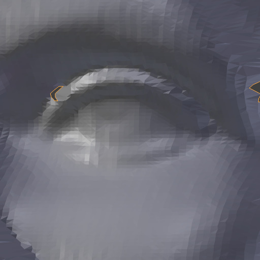
Factor: 2.5.¶
Factor: 5.0.¶
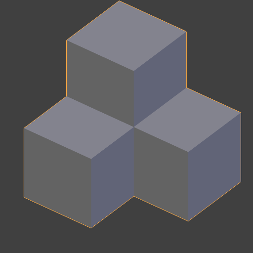
Factor: 0.0.¶
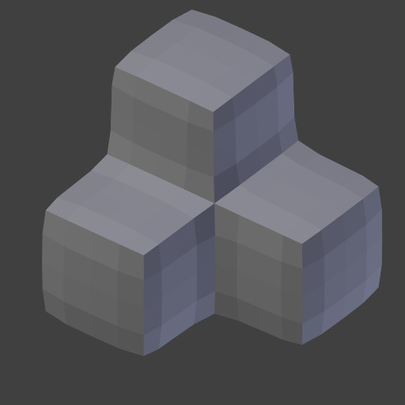
Factor: 1.0.¶
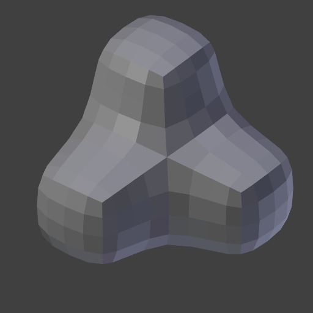
Factor: 10.0.¶
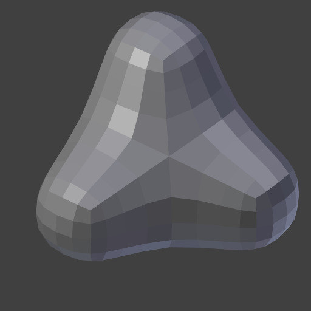
Factor: 50.0.¶
Factor: 0.0.¶
Factor: -20.0.¶
Factor: -50.0.¶
Factor: -300.0.¶
- Lambda Border
Vì không có cách nào tính toán dòng độ cong trên các cạnh biên, chúng phải được điều khiển riêng. Các cạnh biên được làm mượt bằng một phương pháp đơn giản hơn nhiều, dùng thuộc tính này để kiểm soát mức ảnh hưởng.
Giá trị dương sẽ làm mượt vị trí các vertex, còn giá trị âm sẽ "làm nổi bật" chúng bằng cách biến đổi theo hướng ngược lại.
Với factor 2.5.¶ 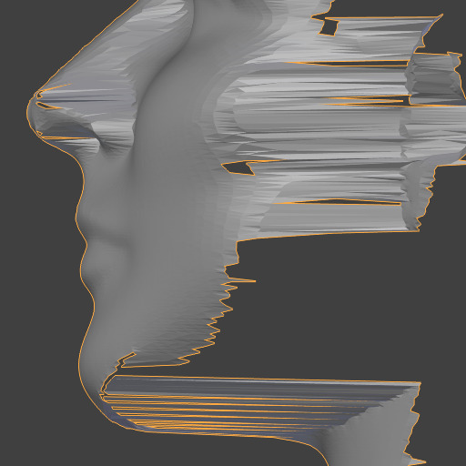
Border: 0.0.¶
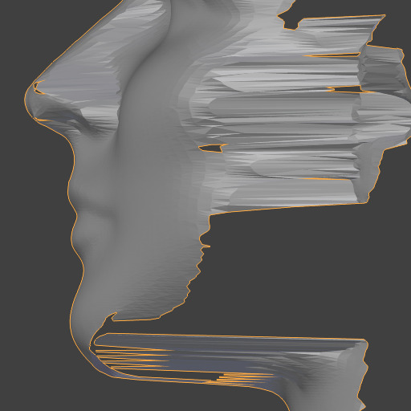
Border: 1.0.¶
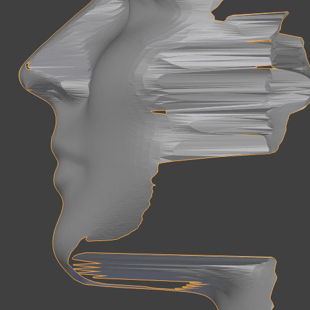
Border: 2.5.¶
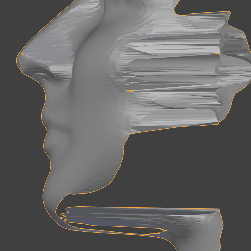
Border: 10.0.¶
Với factor 20.0.¶ 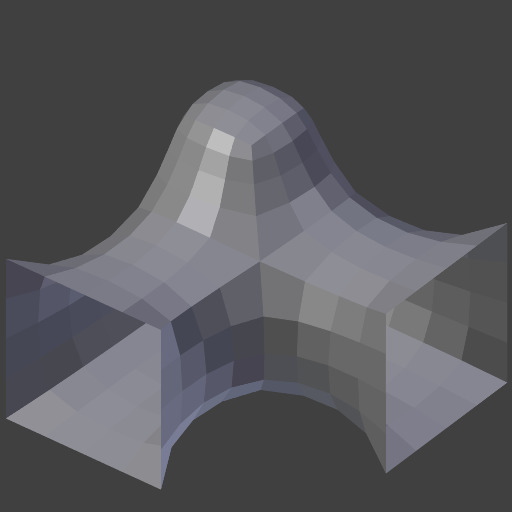
Border: 0.0.¶
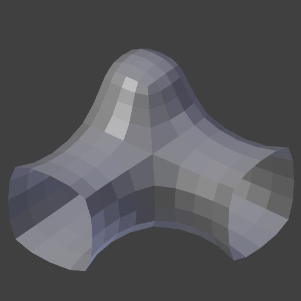
Border: 1.0.¶
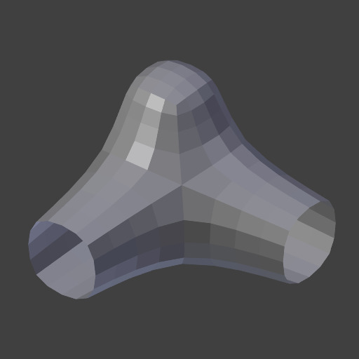
Border: 5.0.¶
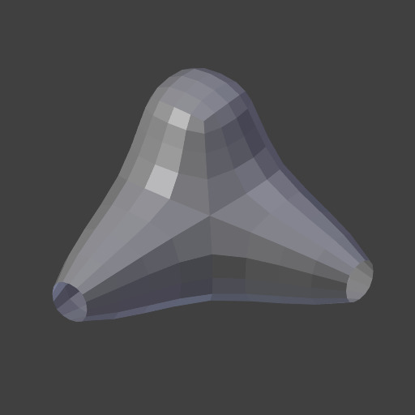
Border: 20.0.¶
- Preserve Volume
Quá trình làm mượt có thể gây co rút. Điều này rõ rệt với giá trị Factor lớn hoặc Repeat lớn. Bạn có thể dùng tùy chọn đó để giảm hiệu ứng này.
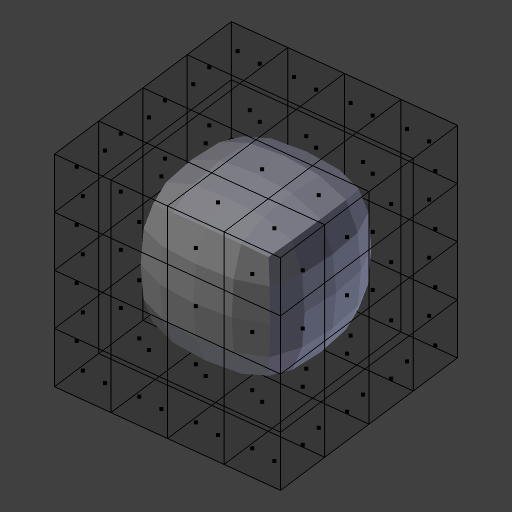
Tắt.¶
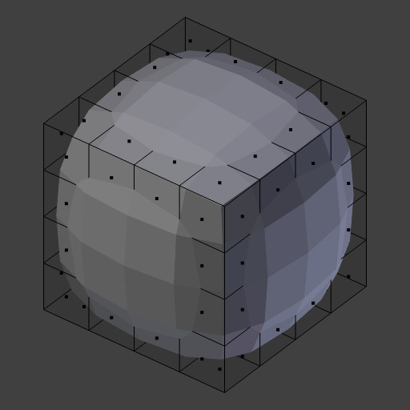
Bật.¶
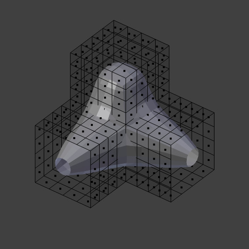
Tắt.¶
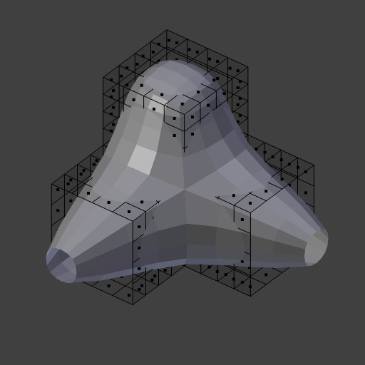
Bật.¶
- Normalized
Khi bật, kết quả sẽ phụ thuộc vào kích thước face. Khi tắt, có thể xuất hiện các gai hình học.
Hình học gốc.¶
Bật.¶
Tắt.¶
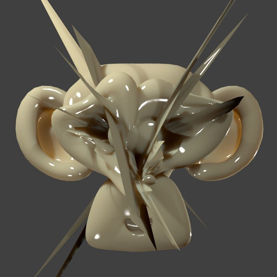
Tắt, Factor cao.¶
- Vertex Group
Tên một vertex group, để giới hạn hiệu ứng chỉ vào một nhóm vertex. Cho phép làm mượt hoặc làm nổi bật có chọn lọc, theo thời gian thực, bằng cách vẽ trọng số vertex.
Hình học gốc
Không chọn Group
Trọng số Vertex
Result
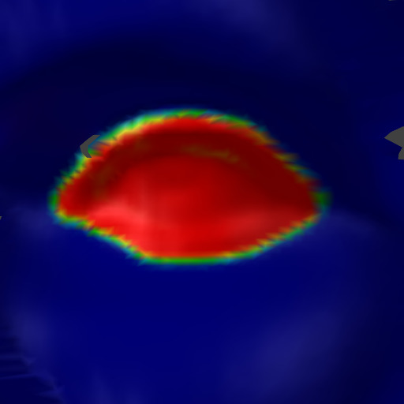
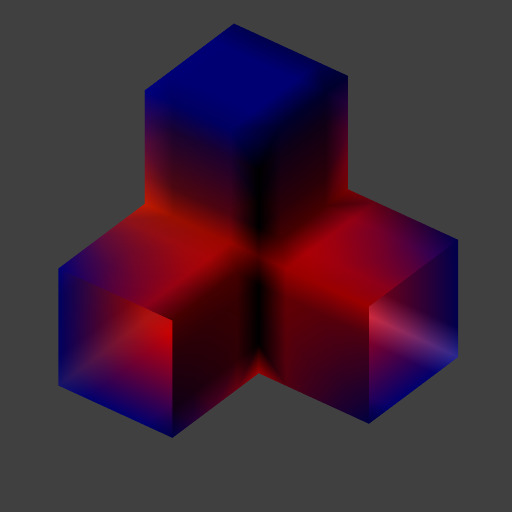
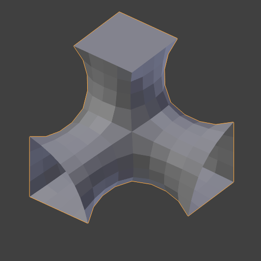
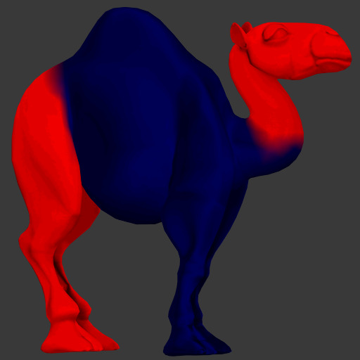
- Invert
Đảo ngược ảnh hưởng của vertex group đang chọn, nghĩa là nhóm lúc này đại diện cho những vertex sẽ không bị biến dạng bởi modifier.
Cài đặt này đảo ngược các giá trị weight của nhóm.


Ví dụ¶
Mặt trước hình người mẫu nữ blend-file.¶ |
Mặt bên hình người mẫu nữ blend-file.¶ |
Khối lập phương làm mượt blend-file.¶ |
Hình dạng được làm nổi bật blend-file.¶ |
Xem thêm